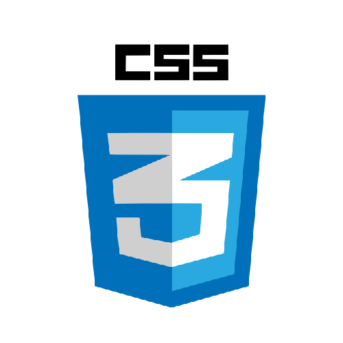
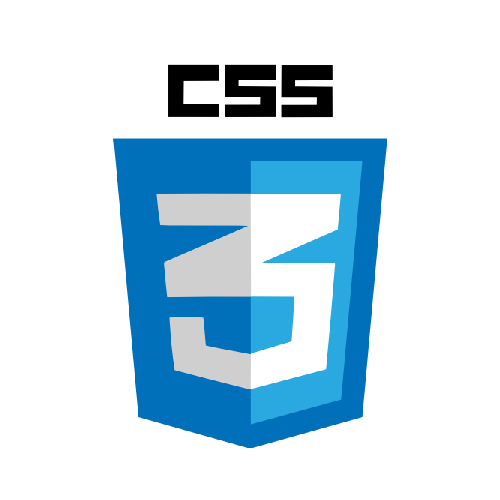
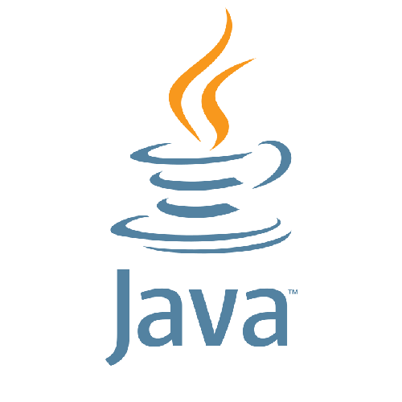
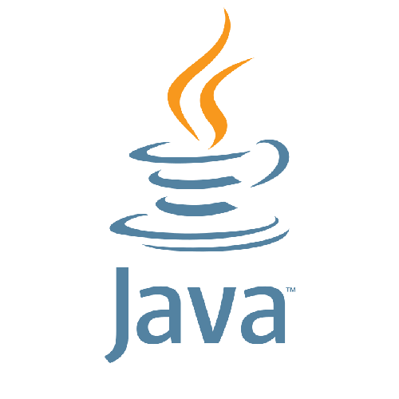
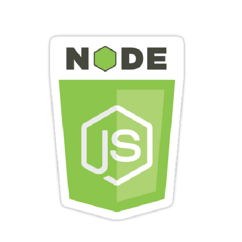
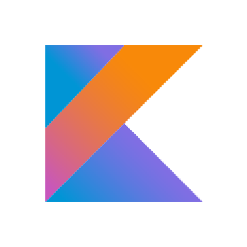
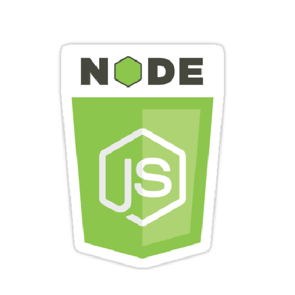
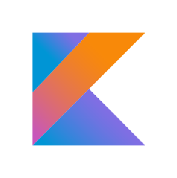

Soy un joven programador de 24 años, residente en Albal (Valencia) y actualmente estoy estudiando en la UPV el cuarto curso del grado de ingeniería informática, más concretamente la rama de ingeniería del software.
Al acabar la ESO me saque el titulo TSMR (Técnico en sistemas microinformáticos y redes) en un ciclo formativo de grado medio, en el aprendí ofimática, algo de hardware, redes y las bases de la programación.
Cuando acabé TSMR vi que a mi me gustaba programar más que el hardware y por ello me apunte al ciclo superior DAM (Desarrollo de aplicaciones multiplataforma), en el aprendí varios lenguajes de programación (PHP, Java, Android), por otra parte también aprendí HTML,CSS y SQL.
Mientras cursaba DAM también participé en varios cursos intensivos, entre ellos uno desarrollo de aplicaciones móviles para iPhone y un curso intensivo sobre SCRUM (El cual luego pusimos en práctica realizando el proyecto final de curso).
Después de cursar DAM, para completar mi aprendizaje, cursé el grado DAW (Desarrollo de aplicaciones Web) donde pude reforzar y aumentar los conocimientos que ya tenía de Java, PHP, HTML y CSS, además de aprender JavaScript, AJAX, a usar photoshop y a configurar múltiples CMSs.
En mi tiempo libre me gusta relajarme en el ordenador, ya sea viendo series, películas, jugando a videojuegos y cosas por el estilo.
Cuando necesito desconectar me gusta apartarme de todas las redes y sentarme a leer tranquilamente alguna novela o libro sobre temas que llamen mi atención o curiosidad.
Otras de las cosas que más me gustan es programar para mi mismo, sobretodo ideas que se me ocurran de la nada o pienso 'Me gustaría una app que hiciera esto' y la mayoría de veces intento hacerla por mi mismo (Aunque alguien ya la tenga subida a google play o incluso github) si creo que puede ayudarme a aprender algo nuevo, como por ejemplo en estos momentos a aprender Kotlin.
 


 



 


